Bomberos, MINSAL y SENAPRED no validaron los resultados. Son resultados de un observatorio independiente, no una evaluación oficial.
Las siete regiones
En las siete regiones viven 14.365.741 personas según el Censo 2024. 506.943 (3,5 %) quedan a más de 15 minutos de tiempo de viaje de una compañía de bomberos, y 705.856 (4,9 %) a más de 15 minutos de una urgencia de salud.
3.559 de 35.562 zonas hexagonales de resolución 7 (unos 5 km² cada una) son zonas calientes de recurrencia de quema entre 2013 y 2025.
El escenario central usa las compañías de la capa oficial, velocidades al 80 % del límite legal de cada vía y umbral de 15 minutos. Los demás escenarios están en los datos. Contiene información de OpenStreetMap, disponible bajo la Open Database License (ODbL). Las cifras de población describen zonas y comunas, no personas, y no muestran la situación de cada hogar.
| Región | Colegios expuestos | Colegios en total | Estudiantes matriculados en los expuestos | Salud expuesta | Salud en total |
|---|---|---|---|---|---|
| Valparaíso | 103 | 1.196 | 27.772 | 29 | 427 |
| Metropolitana | 21 | 2.919 | 4.870 | 10 | 1.088 |
| O'Higgins | 33 | 681 | 2.749 | 15 | 294 |
| Maule | 55 | 821 | 6.064 | 29 | 534 |
| Ñuble | 35 | 412 | 6.984 | 12 | 169 |
| Biobío | 125 | 1.050 | 16.109 | 45 | 438 |
| La Araucanía | 118 | 1.092 | 12.898 | 40 | 459 |
Vista general de las siete regiones


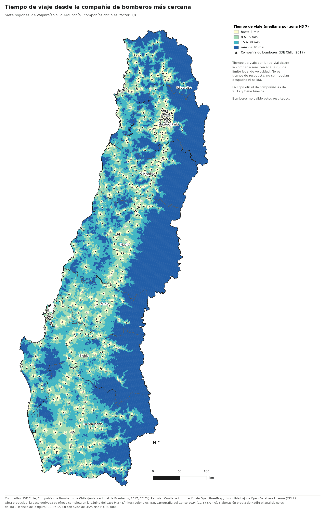

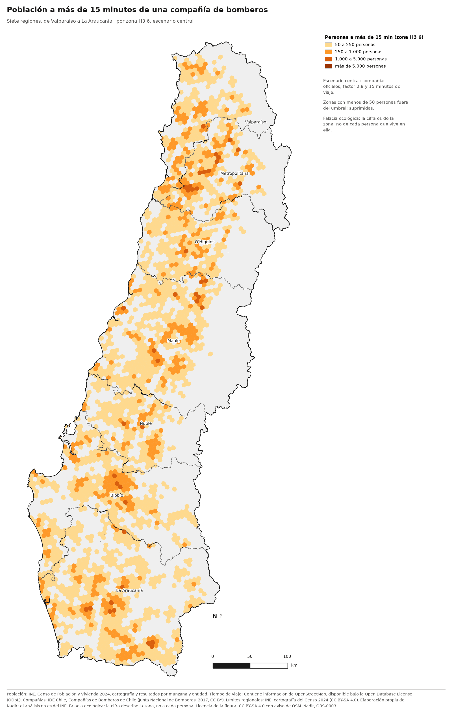

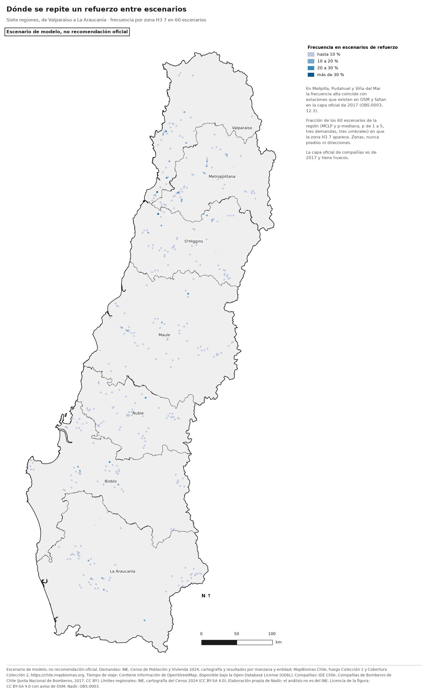
Región por región
Elige una región. Cada mapa nombra sus comunas y se abre en tamaño completo al tocarlo.
Valparaíso
Viven 1.861.909 personas según el Censo 2024. 52.065 (2,8 %) quedan a más de 15 minutos de tiempo de viaje de una compañía de bomberos, y el 12,0 % a más de 8 minutos. Desde una urgencia de salud, el 3,3 % queda a más de 15 minutos.
265 de 3.750 zonas hexagonales son zonas calientes de recurrencia de quema. En ellas o en zonas de recurrencia alta viven 326.567 personas; 8.073 quedan además a más de 15 minutos de una compañía.
103 de 1.196 establecimientos escolares, con 27.772 estudiantes matriculados, y 29 de 427 establecimientos de salud están en una zona caliente o en una celda que se quemó entre 2013 y 2025.
Contiene información de OpenStreetMap, disponible bajo la Open Database License (ODbL). Las cifras de población describen zonas y comunas, no personas, y no muestran la situación de cada hogar.
En esta región está el caso severidad del incendio de Viña del Mar, febrero de 2024.
Dónde se repite el fuego
Zonas hexagonales donde el área quemada entre 2013 y 2025 se concentra más de lo esperable por azar (Gi* de Getis-Ord, con corrección de Benjamini-Hochberg al 5 %).

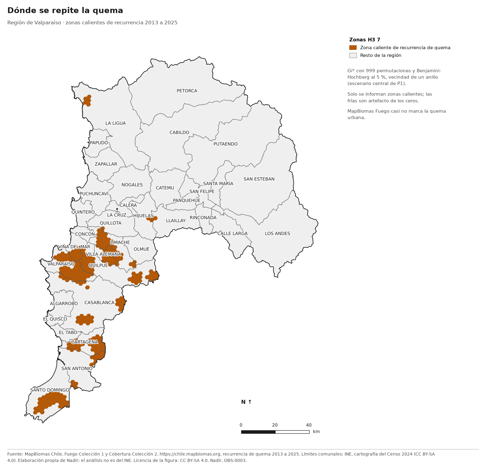
Tiempo de viaje desde las compañías de bomberos
Tiempo de viaje por la red vial desde la compañía más cercana de la capa oficial, con velocidades al 80 % del límite legal de cada vía. Es tiempo de viaje y no incluye despacho ni salida.

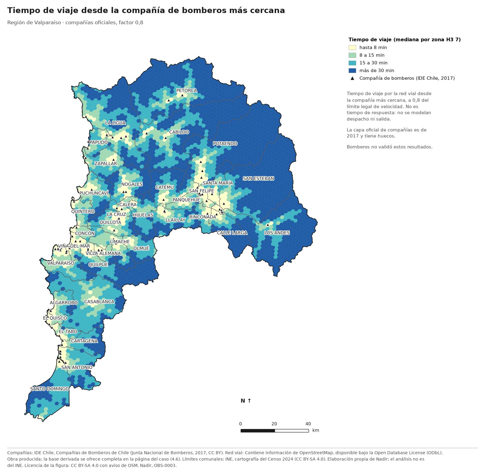
Población a más de 15 minutos
Personas que viven en cada zona hexagonal a más de 15 minutos de tiempo de viaje de una compañía. Las zonas con menos de 50 personas no se muestran.

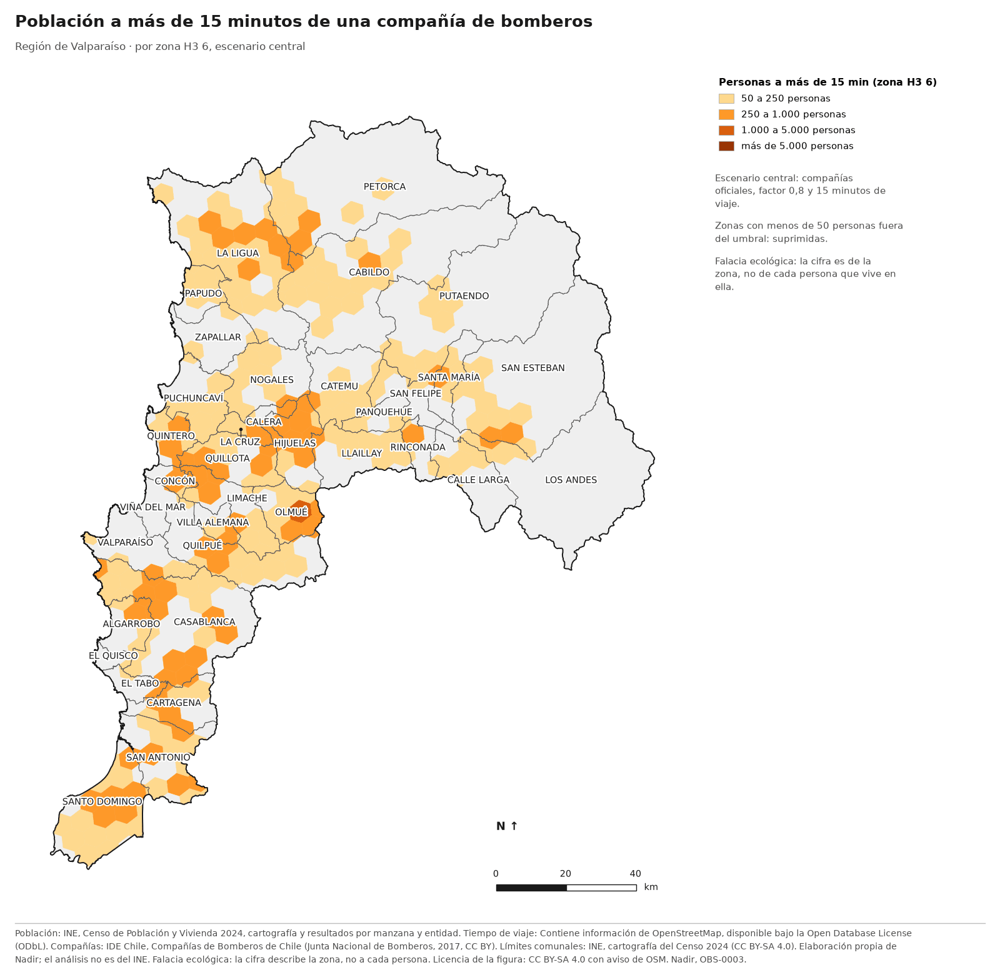
Comunas con más personas a más de 15 minutos
Las diez comunas de la región con más personas a más de 15 minutos de una compañía, con su porcentaje.

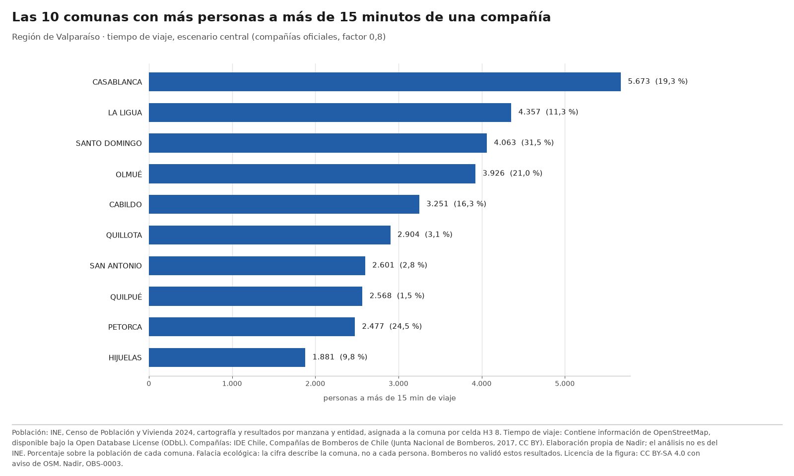
Las tres con más personas son Casablanca, 5.673 personas (19,3 %); La Ligua, 4.357 personas (11,3 %); Santo Domingo, 4.063 personas (31,5 %). Contiene información de OpenStreetMap, disponible bajo la Open Database License (ODbL).
Escenarios de refuerzo
Frecuencia con que cada zona aparece en 60 escenarios de modelo de cobertura máxima y p-mediana.

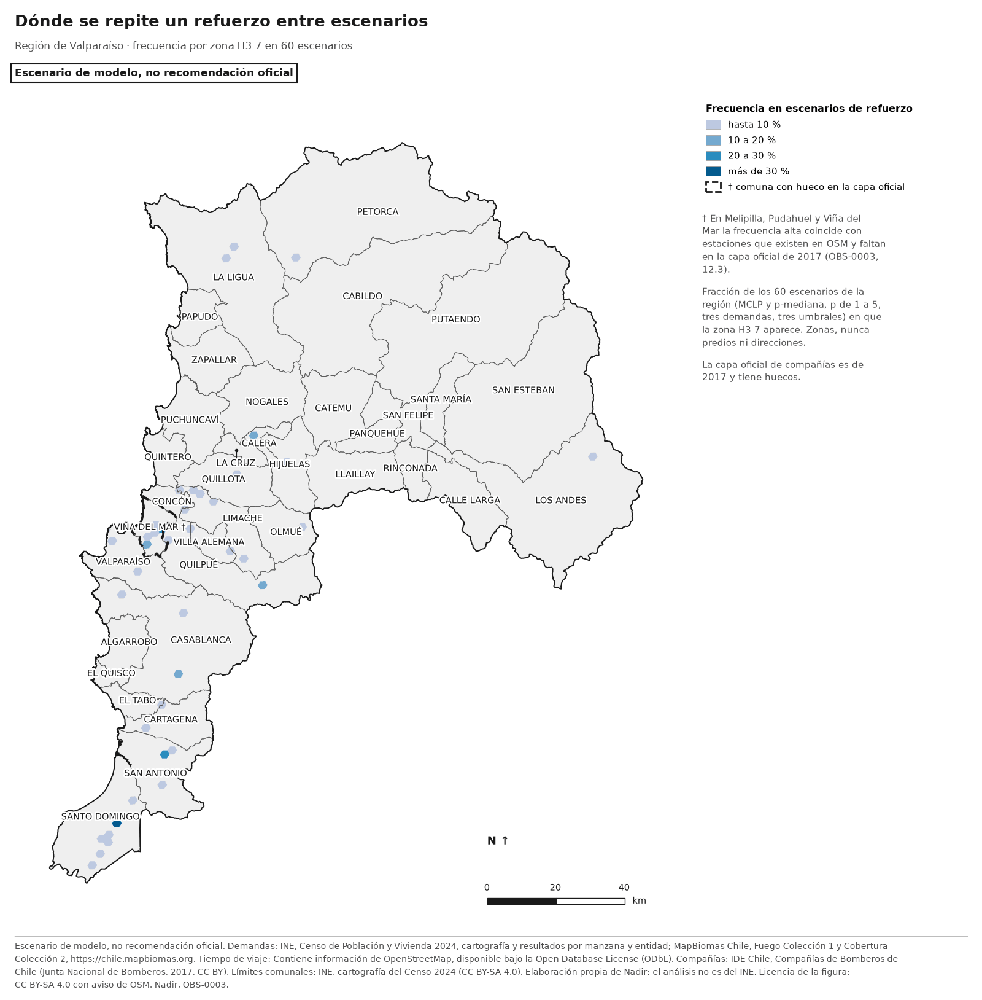
Los escenarios de refuerzo son escenarios de modelo, no recomendación oficial. En Melipilla, Pudahuel y Viña del Mar la frecuencia alta coincide con estaciones que existen en OSM y faltan en la capa oficial de 2017 (OBS-0003, 12.3).
En Viña del Mar, la capa oficial registra 8 compañías y OpenStreetMap tiene 6 estaciones más, sin par a 300 metros. Contiene información de OpenStreetMap, disponible bajo la Open Database License (ODbL).
Metropolitana de Santiago
Viven 7.291.744 personas según el Censo 2024. 78.454 (1,1 %) quedan a más de 15 minutos de tiempo de viaje de una compañía de bomberos, y el 5,4 % a más de 8 minutos. Desde una urgencia de salud, el 1,7 % queda a más de 15 minutos.
301 de 3.674 zonas hexagonales son zonas calientes de recurrencia de quema. En ellas o en zonas de recurrencia alta viven 59.030 personas; 13.391 quedan además a más de 15 minutos de una compañía.
21 de 2.919 establecimientos escolares, con 4.870 estudiantes matriculados, y 10 de 1.088 establecimientos de salud están en una zona caliente o en una celda que se quemó entre 2013 y 2025.
Contiene información de OpenStreetMap, disponible bajo la Open Database License (ODbL). Las cifras de población describen zonas y comunas, no personas, y no muestran la situación de cada hogar.
Dónde se repite el fuego
Zonas hexagonales donde el área quemada entre 2013 y 2025 se concentra más de lo esperable por azar (Gi* de Getis-Ord, con corrección de Benjamini-Hochberg al 5 %).

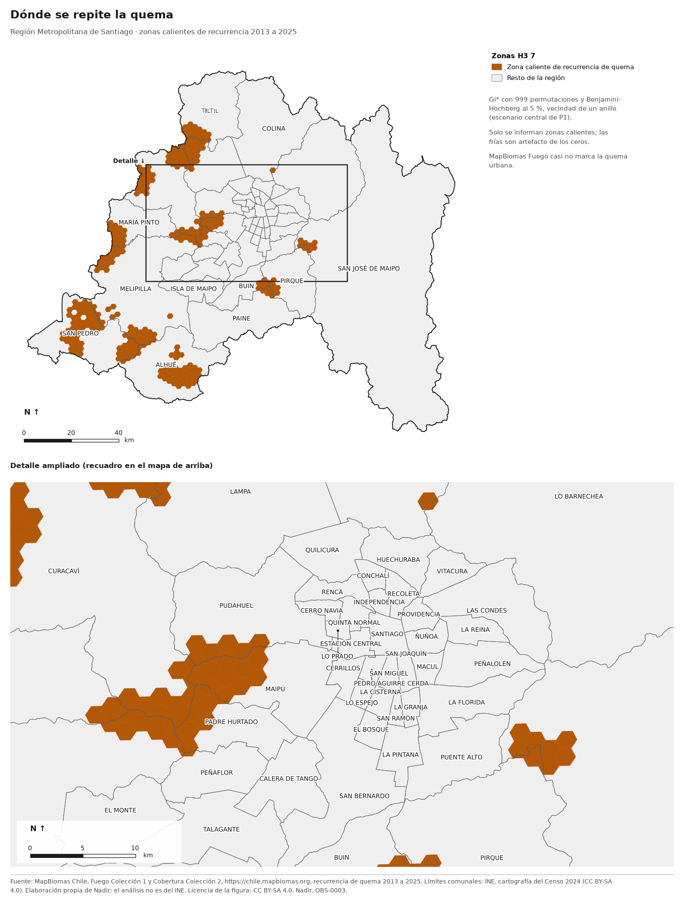
Tiempo de viaje desde las compañías de bomberos
Tiempo de viaje por la red vial desde la compañía más cercana de la capa oficial, con velocidades al 80 % del límite legal de cada vía. Es tiempo de viaje y no incluye despacho ni salida.

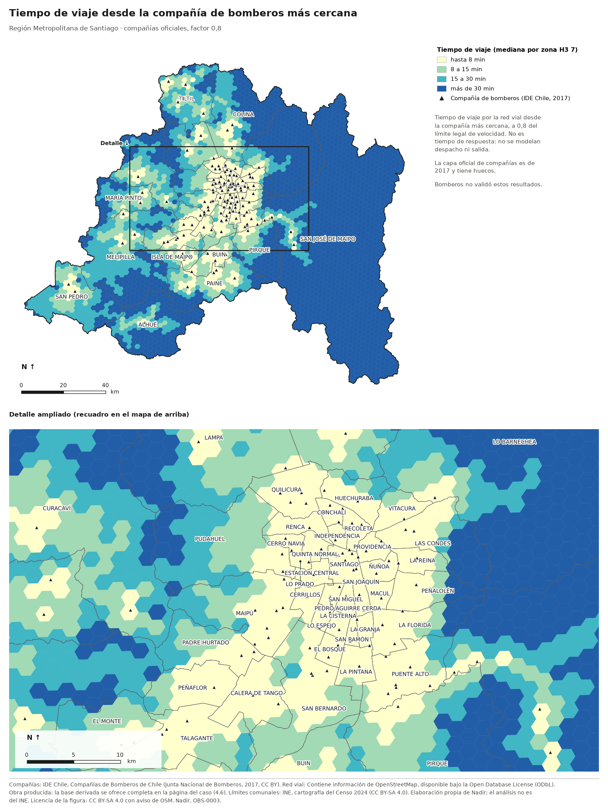
Población a más de 15 minutos
Personas que viven en cada zona hexagonal a más de 15 minutos de tiempo de viaje de una compañía. Las zonas con menos de 50 personas no se muestran.

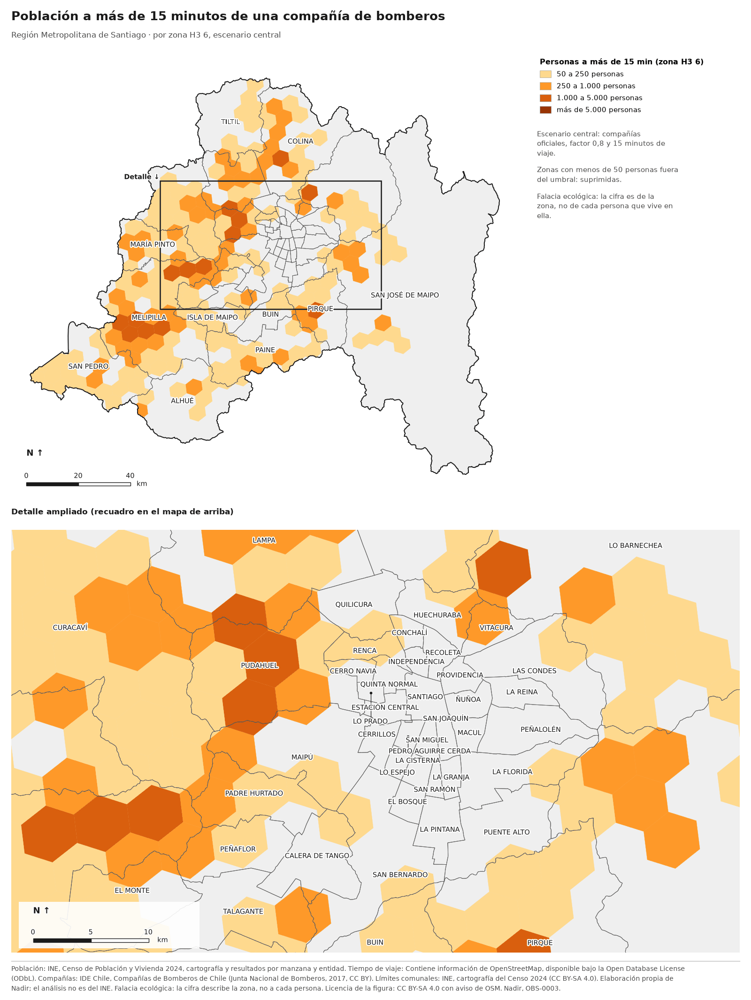
Comunas con más personas a más de 15 minutos
Las diez comunas de la región con más personas a más de 15 minutos de una compañía, con su porcentaje.

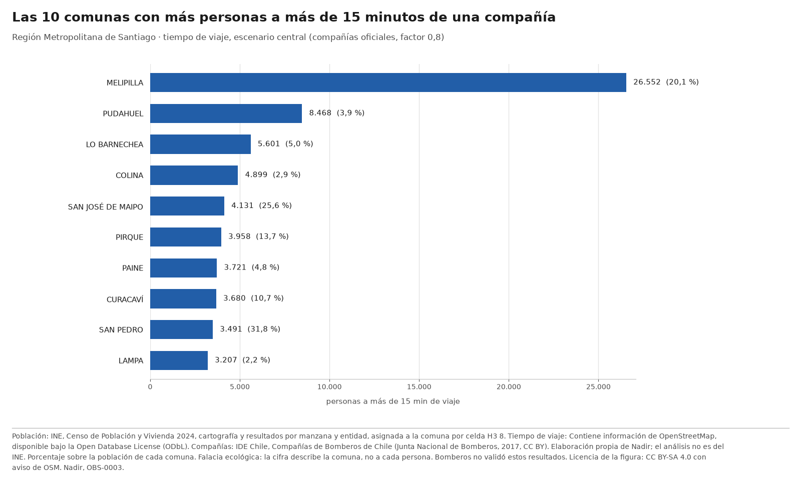
Las tres con más personas son Melipilla, 26.552 personas (20,1 %); Pudahuel, 8.468 personas (3,9 %); Lo Barnechea, 5.601 personas (5,0 %). Contiene información de OpenStreetMap, disponible bajo la Open Database License (ODbL).
Escenarios de refuerzo
Frecuencia con que cada zona aparece en 60 escenarios de modelo de cobertura máxima y p-mediana.

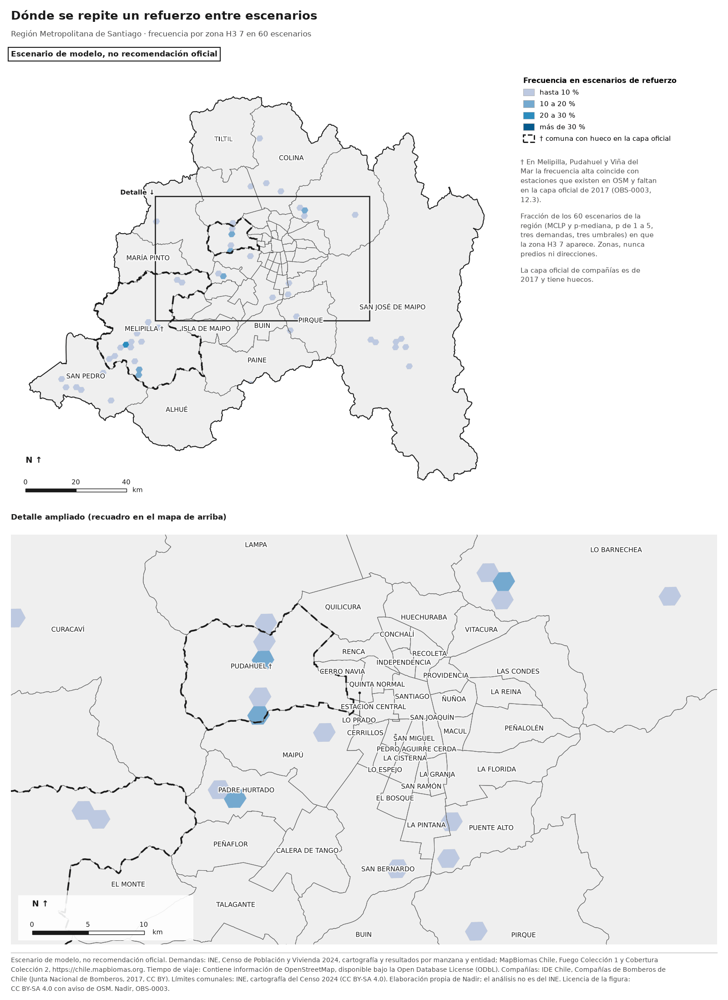
Los escenarios de refuerzo son escenarios de modelo, no recomendación oficial. En Melipilla, Pudahuel y Viña del Mar la frecuencia alta coincide con estaciones que existen en OSM y faltan en la capa oficial de 2017 (OBS-0003, 12.3).
En Melipilla, la capa oficial registra 5 compañías y OpenStreetMap tiene 5 estaciones más, sin par a 300 metros. Contiene información de OpenStreetMap, disponible bajo la Open Database License (ODbL).
En Pudahuel, la capa oficial registra 2 compañías y OpenStreetMap tiene 5 estaciones más, sin par a 300 metros. Contiene información de OpenStreetMap, disponible bajo la Open Database License (ODbL).
Libertador General Bernardo O'Higgins
Viven 981.737 personas según el Censo 2024. 44.212 (4,5 %) quedan a más de 15 minutos de tiempo de viaje de una compañía de bomberos, y el 20,7 % a más de 8 minutos. Desde una urgencia de salud, el 9,3 % queda a más de 15 minutos.
358 de 3.916 zonas hexagonales son zonas calientes de recurrencia de quema. En ellas o en zonas de recurrencia alta viven 22.366 personas; 6.342 quedan además a más de 15 minutos de una compañía.
33 de 681 establecimientos escolares, con 2.749 estudiantes matriculados, y 15 de 294 establecimientos de salud están en una zona caliente o en una celda que se quemó entre 2013 y 2025.
Contiene información de OpenStreetMap, disponible bajo la Open Database License (ODbL). Las cifras de población describen zonas y comunas, no personas, y no muestran la situación de cada hogar.
Dónde se repite el fuego
Zonas hexagonales donde el área quemada entre 2013 y 2025 se concentra más de lo esperable por azar (Gi* de Getis-Ord, con corrección de Benjamini-Hochberg al 5 %).

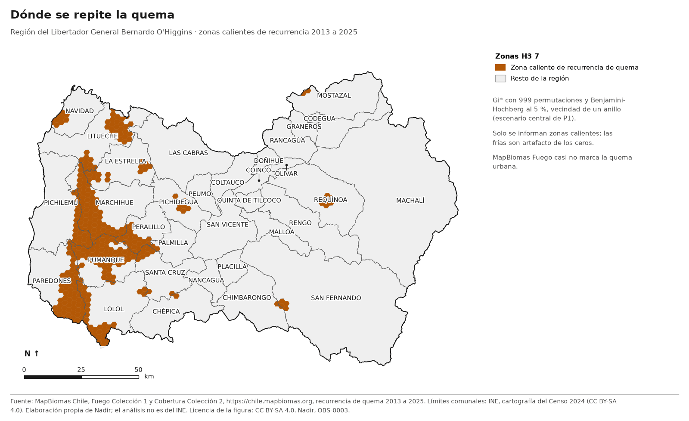
Tiempo de viaje desde las compañías de bomberos
Tiempo de viaje por la red vial desde la compañía más cercana de la capa oficial, con velocidades al 80 % del límite legal de cada vía. Es tiempo de viaje y no incluye despacho ni salida.

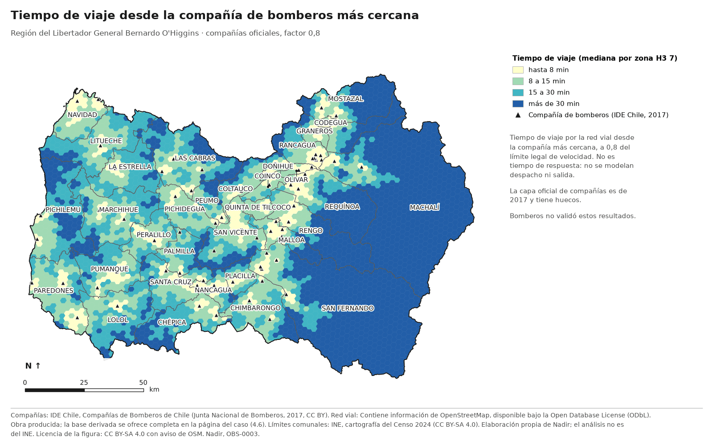
Población a más de 15 minutos
Personas que viven en cada zona hexagonal a más de 15 minutos de tiempo de viaje de una compañía. Las zonas con menos de 50 personas no se muestran.

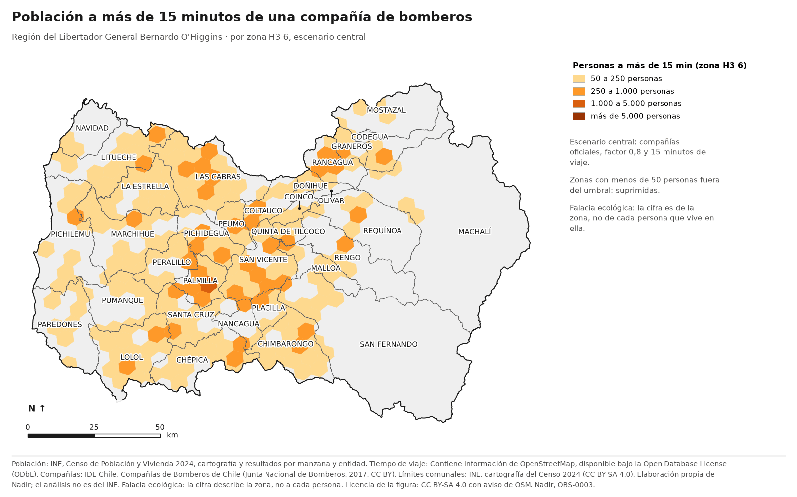
Comunas con más personas a más de 15 minutos
Las diez comunas de la región con más personas a más de 15 minutos de una compañía, con su porcentaje.

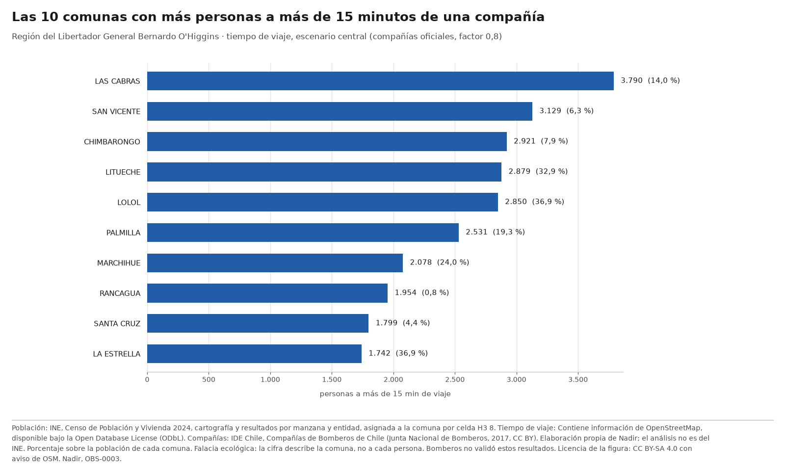
Las tres con más personas son Las Cabras, 3.790 personas (14,0 %); San Vicente, 3.129 personas (6,3 %); Chimbarongo, 2.921 personas (7,9 %). Contiene información de OpenStreetMap, disponible bajo la Open Database License (ODbL).
Escenarios de refuerzo
Frecuencia con que cada zona aparece en 60 escenarios de modelo de cobertura máxima y p-mediana.

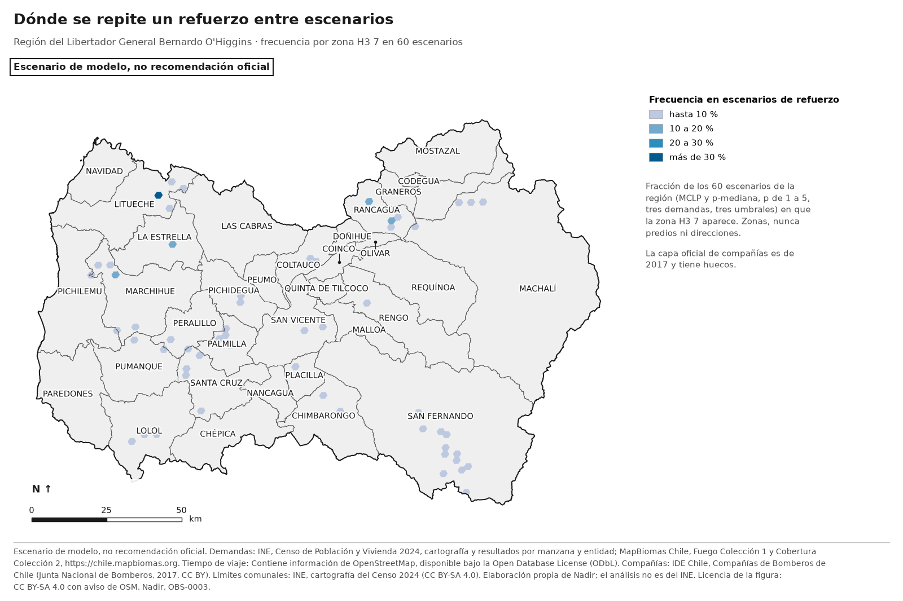
Los escenarios de refuerzo son escenarios de modelo, no recomendación oficial. En Melipilla, Pudahuel y Viña del Mar la frecuencia alta coincide con estaciones que existen en OSM y faltan en la capa oficial de 2017 (OBS-0003, 12.3).
Maule
Viven 1.114.486 personas según el Censo 2024. 94.927 (8,5 %) quedan a más de 15 minutos de tiempo de viaje de una compañía de bomberos, y el 24,0 % a más de 8 minutos. Desde una urgencia de salud, el 11,1 % queda a más de 15 minutos.
898 de 7.363 zonas hexagonales son zonas calientes de recurrencia de quema. En ellas o en zonas de recurrencia alta viven 40.230 personas; 9.679 quedan además a más de 15 minutos de una compañía.
55 de 821 establecimientos escolares, con 6.064 estudiantes matriculados, y 29 de 534 establecimientos de salud están en una zona caliente o en una celda que se quemó entre 2013 y 2025.
Contiene información de OpenStreetMap, disponible bajo la Open Database License (ODbL). Las cifras de población describen zonas y comunas, no personas, y no muestran la situación de cada hogar.
Dónde se repite el fuego
Zonas hexagonales donde el área quemada entre 2013 y 2025 se concentra más de lo esperable por azar (Gi* de Getis-Ord, con corrección de Benjamini-Hochberg al 5 %).

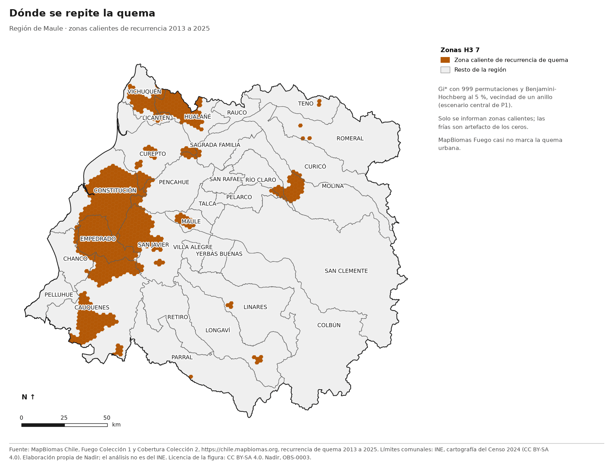
Tiempo de viaje desde las compañías de bomberos
Tiempo de viaje por la red vial desde la compañía más cercana de la capa oficial, con velocidades al 80 % del límite legal de cada vía. Es tiempo de viaje y no incluye despacho ni salida.

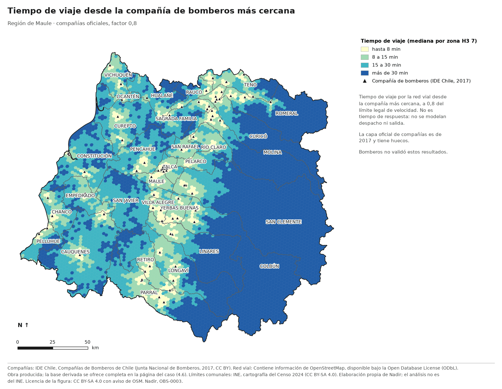
Población a más de 15 minutos
Personas que viven en cada zona hexagonal a más de 15 minutos de tiempo de viaje de una compañía. Las zonas con menos de 50 personas no se muestran.

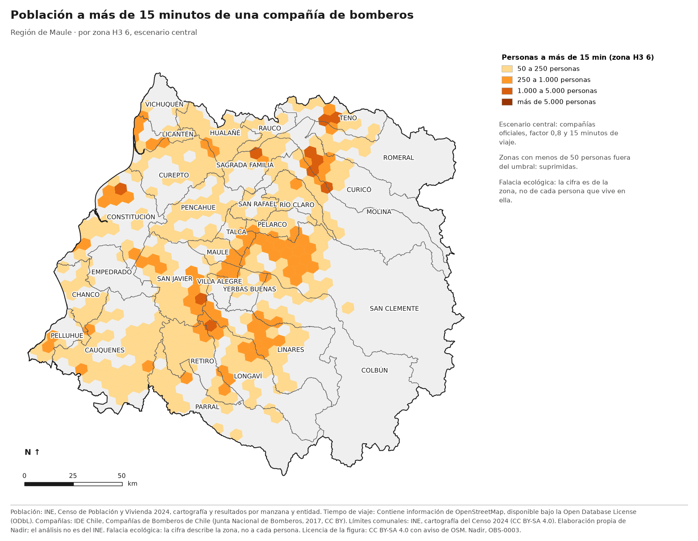
Comunas con más personas a más de 15 minutos
Las diez comunas de la región con más personas a más de 15 minutos de una compañía, con su porcentaje.

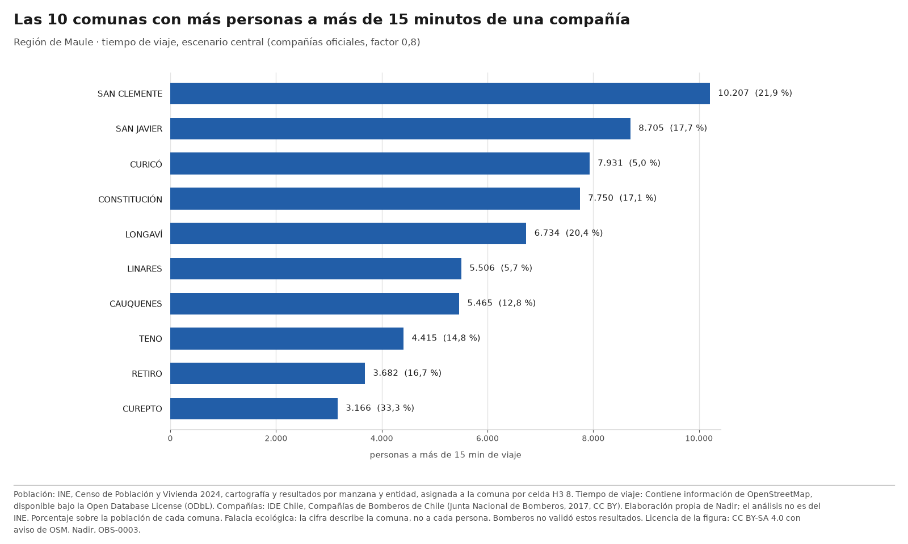
Las tres con más personas son San Clemente, 10.207 personas (21,9 %); San Javier, 8.705 personas (17,7 %); Curicó, 7.931 personas (5,0 %). Contiene información de OpenStreetMap, disponible bajo la Open Database License (ODbL).
Escenarios de refuerzo
Frecuencia con que cada zona aparece en 60 escenarios de modelo de cobertura máxima y p-mediana.

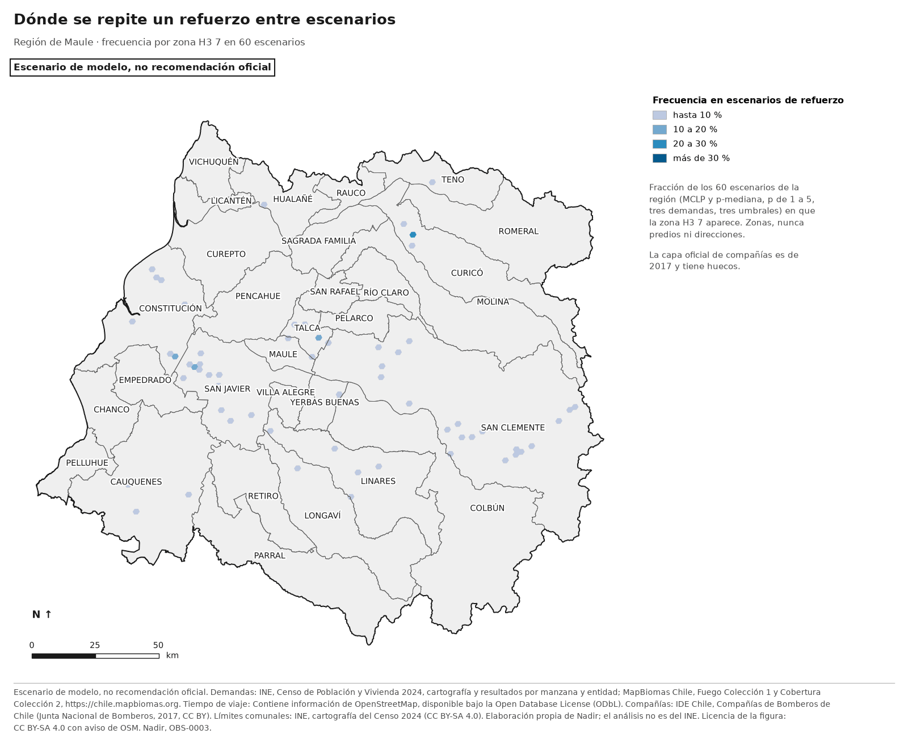
Los escenarios de refuerzo son escenarios de modelo, no recomendación oficial. En Melipilla, Pudahuel y Viña del Mar la frecuencia alta coincide con estaciones que existen en OSM y faltan en la capa oficial de 2017 (OBS-0003, 12.3).
Ñuble
Viven 508.206 personas según el Censo 2024. 40.539 (8,0 %) quedan a más de 15 minutos de tiempo de viaje de una compañía de bomberos, y el 28,8 % a más de 8 minutos. Desde una urgencia de salud, el 12,5 % queda a más de 15 minutos.
316 de 3.321 zonas hexagonales son zonas calientes de recurrencia de quema. En ellas o en zonas de recurrencia alta viven 34.076 personas; 3.796 quedan además a más de 15 minutos de una compañía.
35 de 412 establecimientos escolares, con 6.984 estudiantes matriculados, y 12 de 169 establecimientos de salud están en una zona caliente o en una celda que se quemó entre 2013 y 2025.
Contiene información de OpenStreetMap, disponible bajo la Open Database License (ODbL). Las cifras de población describen zonas y comunas, no personas, y no muestran la situación de cada hogar.
Dónde se repite el fuego
Zonas hexagonales donde el área quemada entre 2013 y 2025 se concentra más de lo esperable por azar (Gi* de Getis-Ord, con corrección de Benjamini-Hochberg al 5 %).

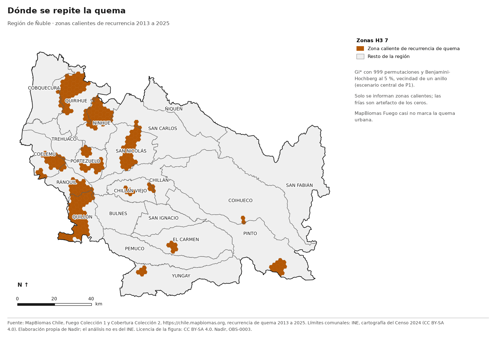
Tiempo de viaje desde las compañías de bomberos
Tiempo de viaje por la red vial desde la compañía más cercana de la capa oficial, con velocidades al 80 % del límite legal de cada vía. Es tiempo de viaje y no incluye despacho ni salida.

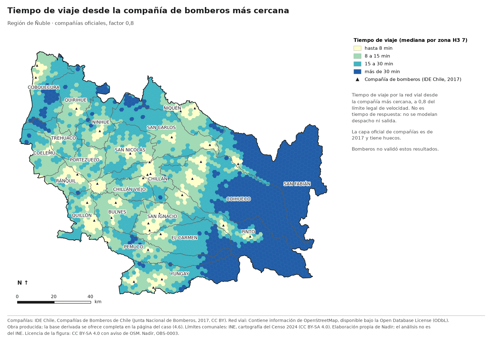
Población a más de 15 minutos
Personas que viven en cada zona hexagonal a más de 15 minutos de tiempo de viaje de una compañía. Las zonas con menos de 50 personas no se muestran.

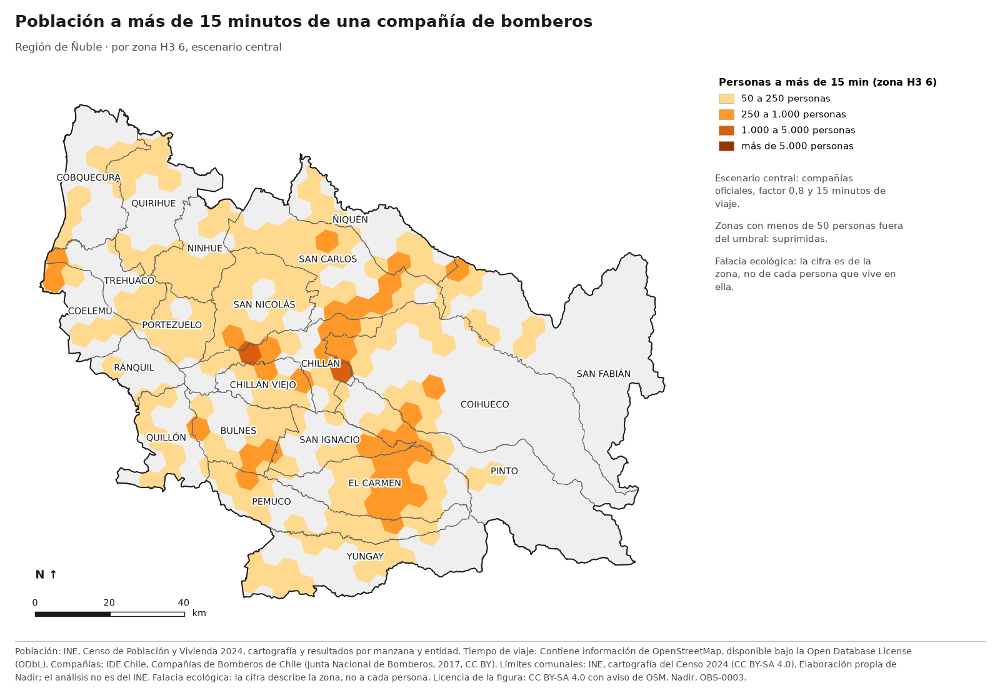
Comunas con más personas a más de 15 minutos
Las diez comunas de la región con más personas a más de 15 minutos de una compañía, con su porcentaje.

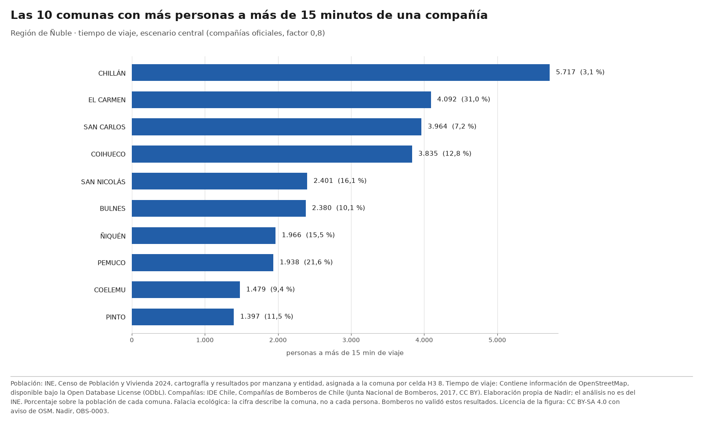
Las tres con más personas son Chillán, 5.717 personas (3,1 %); El Carmen, 4.092 personas (31,0 %); San Carlos, 3.964 personas (7,2 %). Contiene información de OpenStreetMap, disponible bajo la Open Database License (ODbL).
Escenarios de refuerzo
Frecuencia con que cada zona aparece en 60 escenarios de modelo de cobertura máxima y p-mediana.

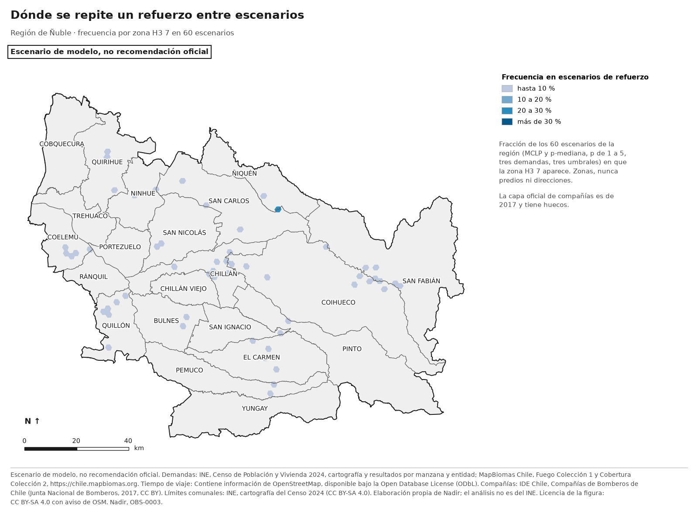
Los escenarios de refuerzo son escenarios de modelo, no recomendación oficial. En Melipilla, Pudahuel y Viña del Mar la frecuencia alta coincide con estaciones que existen en OSM y faltan en la capa oficial de 2017 (OBS-0003, 12.3).
Biobío
Viven 1.604.113 personas según el Censo 2024. 83.165 (5,2 %) quedan a más de 15 minutos de tiempo de viaje de una compañía de bomberos, y el 12,5 % a más de 8 minutos. Desde una urgencia de salud, el 6,8 % queda a más de 15 minutos.
736 de 5.930 zonas hexagonales son zonas calientes de recurrencia de quema. En ellas o en zonas de recurrencia alta viven 65.302 personas; 13.985 quedan además a más de 15 minutos de una compañía.
125 de 1.050 establecimientos escolares, con 16.109 estudiantes matriculados, y 45 de 438 establecimientos de salud están en una zona caliente o en una celda que se quemó entre 2013 y 2025.
Contiene información de OpenStreetMap, disponible bajo la Open Database License (ODbL). Las cifras de población describen zonas y comunas, no personas, y no muestran la situación de cada hogar.
Dónde se repite el fuego
Zonas hexagonales donde el área quemada entre 2013 y 2025 se concentra más de lo esperable por azar (Gi* de Getis-Ord, con corrección de Benjamini-Hochberg al 5 %).

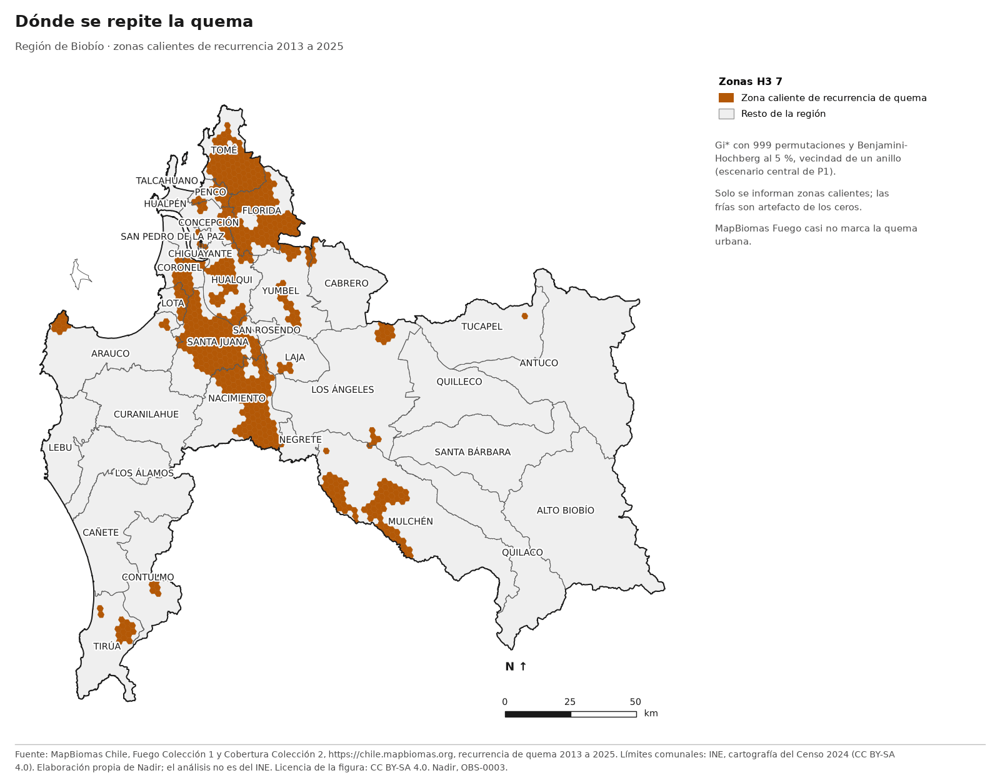
Tiempo de viaje desde las compañías de bomberos
Tiempo de viaje por la red vial desde la compañía más cercana de la capa oficial, con velocidades al 80 % del límite legal de cada vía. Es tiempo de viaje y no incluye despacho ni salida.

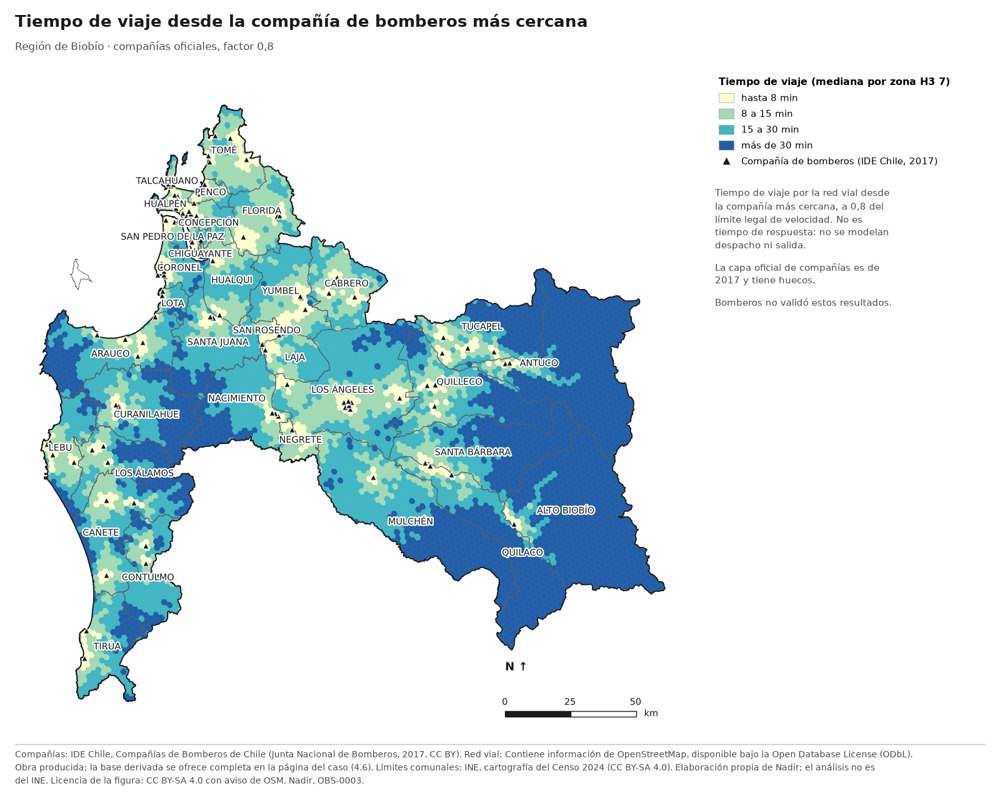
Población a más de 15 minutos
Personas que viven en cada zona hexagonal a más de 15 minutos de tiempo de viaje de una compañía. Las zonas con menos de 50 personas no se muestran.

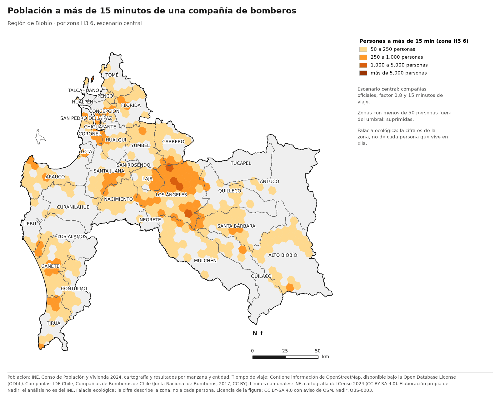
Comunas con más personas a más de 15 minutos
Las diez comunas de la región con más personas a más de 15 minutos de una compañía, con su porcentaje.

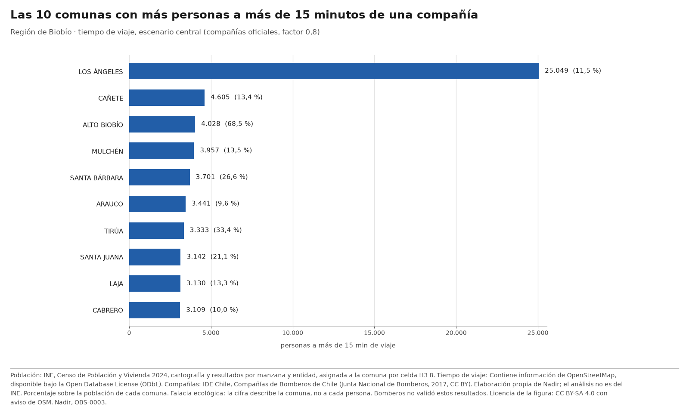
Las tres con más personas son Los Ángeles, 25.049 personas (11,5 %); Cañete, 4.605 personas (13,4 %); Alto Biobío, 4.028 personas (68,5 %). Contiene información de OpenStreetMap, disponible bajo la Open Database License (ODbL).
Escenarios de refuerzo
Frecuencia con que cada zona aparece en 60 escenarios de modelo de cobertura máxima y p-mediana.

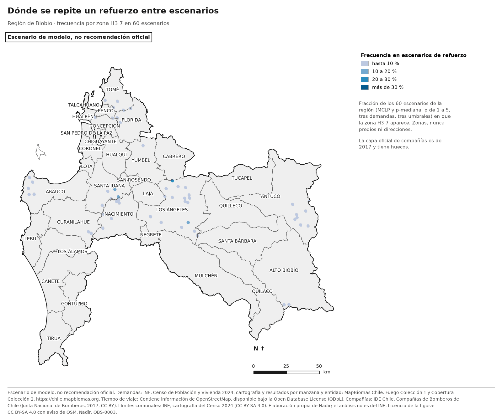
Los escenarios de refuerzo son escenarios de modelo, no recomendación oficial. En Melipilla, Pudahuel y Viña del Mar la frecuencia alta coincide con estaciones que existen en OSM y faltan en la capa oficial de 2017 (OBS-0003, 12.3).
La Araucanía
Viven 1.003.546 personas según el Censo 2024. 113.581 (11,3 %) quedan a más de 15 minutos de tiempo de viaje de una compañía de bomberos, y el 30,0 % a más de 8 minutos. Desde una urgencia de salud, el 13,0 % queda a más de 15 minutos.
685 de 7.608 zonas hexagonales son zonas calientes de recurrencia de quema. En ellas o en zonas de recurrencia alta viven 66.941 personas; 10.509 quedan además a más de 15 minutos de una compañía.
118 de 1.092 establecimientos escolares, con 12.898 estudiantes matriculados, y 40 de 459 establecimientos de salud están en una zona caliente o en una celda que se quemó entre 2013 y 2025.
Contiene información de OpenStreetMap, disponible bajo la Open Database License (ODbL). Las cifras de población describen zonas y comunas, no personas, y no muestran la situación de cada hogar.
Dónde se repite el fuego
Zonas hexagonales donde el área quemada entre 2013 y 2025 se concentra más de lo esperable por azar (Gi* de Getis-Ord, con corrección de Benjamini-Hochberg al 5 %).

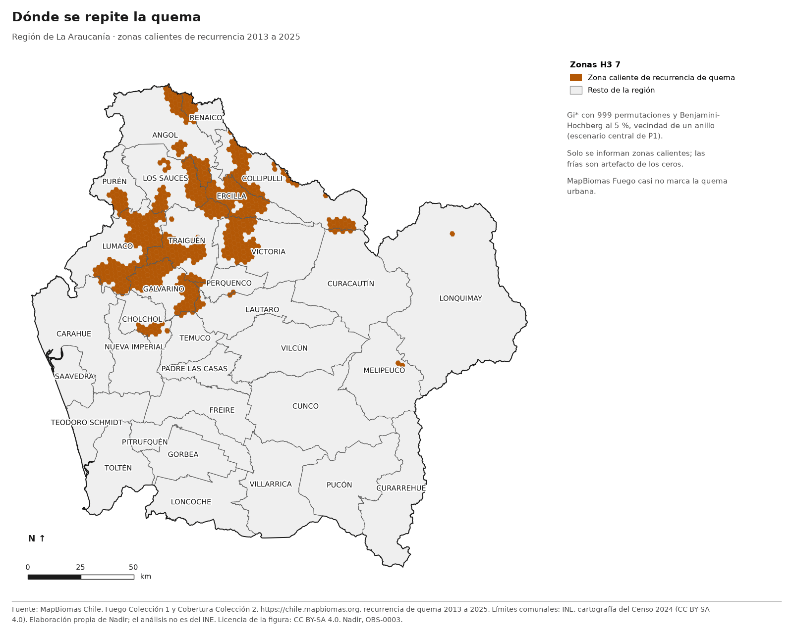
Tiempo de viaje desde las compañías de bomberos
Tiempo de viaje por la red vial desde la compañía más cercana de la capa oficial, con velocidades al 80 % del límite legal de cada vía. Es tiempo de viaje y no incluye despacho ni salida.

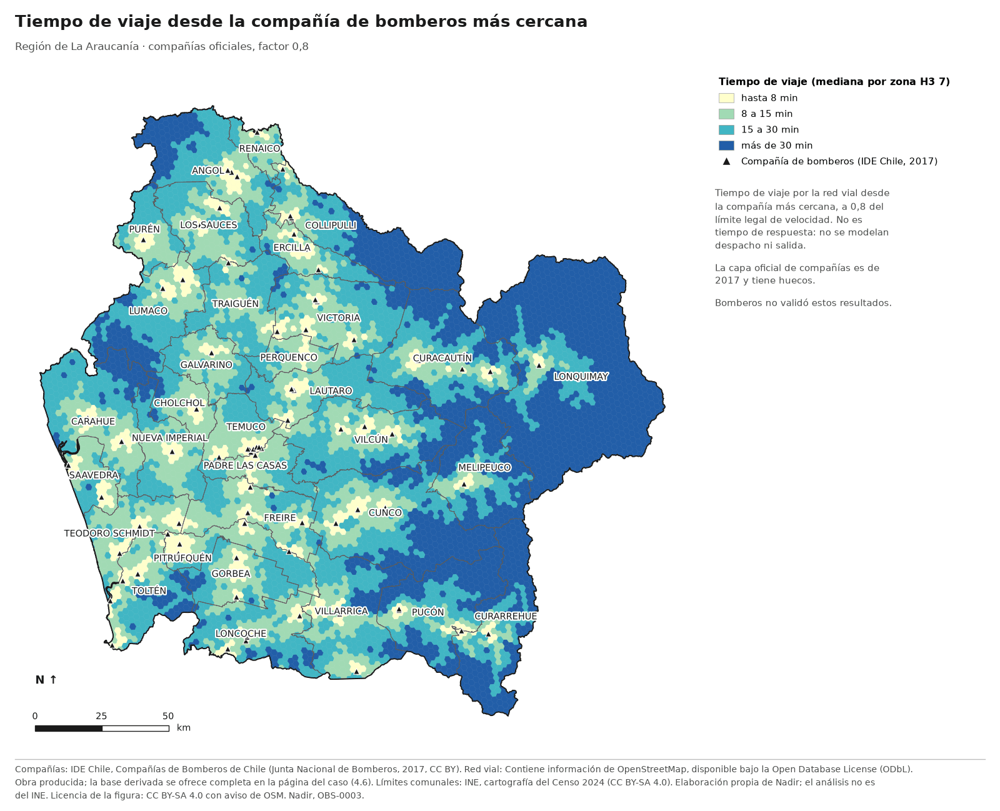
Población a más de 15 minutos
Personas que viven en cada zona hexagonal a más de 15 minutos de tiempo de viaje de una compañía. Las zonas con menos de 50 personas no se muestran.

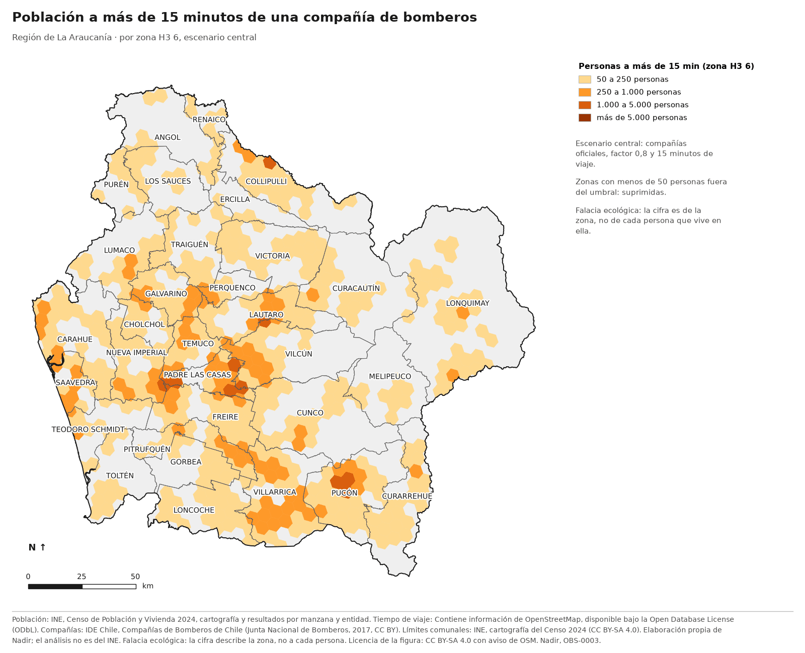
Comunas con más personas a más de 15 minutos
Las diez comunas de la región con más personas a más de 15 minutos de una compañía, con su porcentaje.

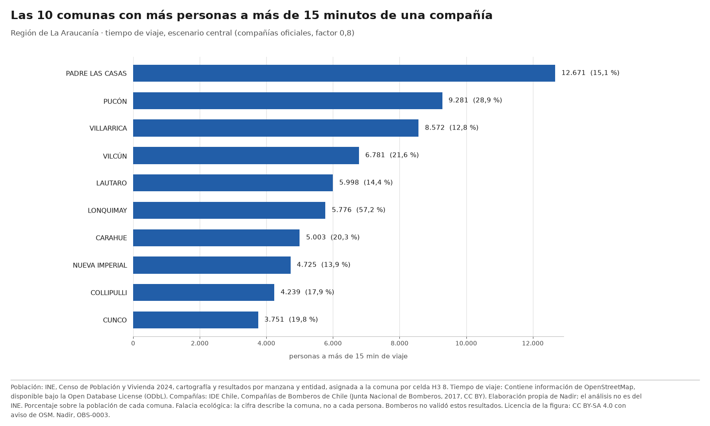
Las tres con más personas son Padre Las Casas, 12.671 personas (15,1 %); Pucón, 9.281 personas (28,9 %); Villarrica, 8.572 personas (12,8 %). Contiene información de OpenStreetMap, disponible bajo la Open Database License (ODbL).
Escenarios de refuerzo
Frecuencia con que cada zona aparece en 60 escenarios de modelo de cobertura máxima y p-mediana.

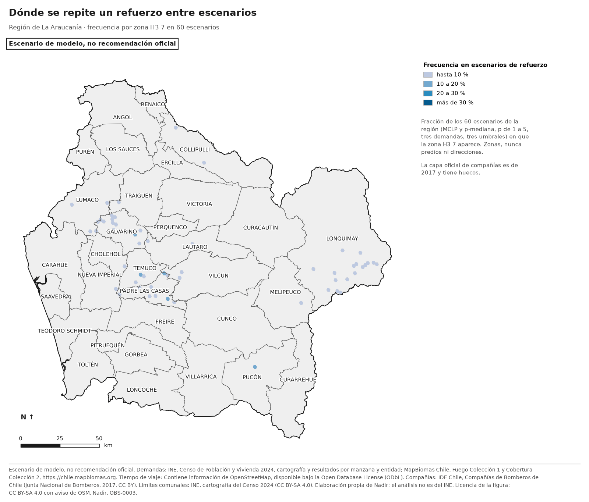
Los escenarios de refuerzo son escenarios de modelo, no recomendación oficial. En Melipilla, Pudahuel y Viña del Mar la frecuencia alta coincide con estaciones que existen en OSM y faltan en la capa oficial de 2017 (OBS-0003, 12.3).
EXPLORATORIO
¿Qué tan bien separa un modelo las zonas que se quemaron de las que no?
Un modelo de aprendizaje automático, entrenado con relieve, cobertura del suelo y distancia a la interfaz, ordena las celdas según si se quemaron entre 2020 y 2024. Se valida con un corte temporal, dejando una región fuera y por bloques espaciales. Solo se publican sus métricas. El modelo no sirve para predecir y no hay capa de probabilidades. El I de Moran de los residuos se calcula por región.
| Región | AUC temporal | AUC región fuera | AUC bloques | Brier (bloques) | Brier de referencia | I de Moran de los residuos |
|---|---|---|---|---|---|---|
| Valparaíso | 0,78 | 0,75 | 0,76 | 0,031 | 0,029 | 0,71 |
| Metropolitana | 0,82 | 0,82 | 0,82 | 0,025 | 0,023 | 0,67 |
| O'Higgins | 0,72 | 0,72 | 0,75 | 0,029 | 0,027 | 0,65 |
| Maule | 0,66 | 0,67 | 0,79 | 0,030 | 0,029 | 0,72 |
| Ñuble | 0,76 | 0,76 | 0,81 | 0,070 | 0,076 | 0,67 |
| Biobío | 0,77 | 0,76 | 0,79 | 0,096 | 0,105 | 0,75 |
| La Araucanía | 0,82 | 0,74 | 0,85 | 0,065 | 0,075 | 0,67 |
| Las siete regiones | 0,77 | 0,76 | 0,83 | 0,052 | 0,056 | no aplica |
Con la densidad de población como variable, el AUC de las siete regiones queda en 0,77 (temporal), 0,76 (región fuera) y 0,84 (bloques).
Avisos y límites
- Bomberos, MINSAL y SENAPRED no validaron los resultados.
- Compañías de bomberos: capa de IDE Chile de 2017 (CC BY); vigencia cotejada con OSM a 300 m.
- Establecimientos escolares: IDE Chile (Mineduc 2021, CC BY); ubicación referencial según Mineduc.
- Los escenarios de refuerzo son escenarios de modelo, no recomendación oficial.
- En Melipilla, Pudahuel y Viña del Mar la frecuencia alta coincide con estaciones que existen en OSM y faltan en la capa oficial de 2017 (OBS-0003, 12.3).
- Solo se mide tiempo de viaje por la red vial; no se modelan despacho, salida ni tránsito.
- OpenStreetMap tiene una completitud desigual entre comunas.
- MapBiomas Fuego casi no marca la quema en zonas urbanas, y MapBiomas recomienda usar sus datos a escalas de hasta 1:100.000.
- Las cifras de población describen zonas y comunas, no personas, y no muestran la situación de cada hogar.
- Este análisis usa datos del Censo 2024 del INE, pero no es un análisis del INE.
Datos y licencias
Cada capa se descarga por separado, con su propia licencia. Ningún archivo combina datos de OpenStreetMap con datos del Censo o de MapBiomas. Formato Parquet, con las columnas celda (índice H3), escenario, valor y fraccion_valida.
| Archivo | Qué contiene | Filas | Peso | Licencia |
|---|---|---|---|---|
| fuego_zonas.parquet | Recurrencia de quema 2013 a 2025 y zonas calientes, en celdas H3 de resolución 7 y 6. | 287.350 | 1,8 MB | Términos de MapBiomas (CC BY, lectura L-1) |
| accesibilidad_r7.parquet | Tiempo de viaje por celda H3 de resolución 7 desde compañías de bomberos y urgencias, en todos los escenarios. | 320.094 | 2,5 MB | ODbL 1.0; la base derivada se ofrece completa en la página del caso (4.6) |
| poblacion_r6.parquet | Población del Censo 2024 por celda H3 de resolución 6, sin celdas de menos de 50 personas. | 3.112 | 33 KB | CC BY-SA 4.0 |
| fuego_poblacion_r6.parquet | Población en zonas calientes y de recurrencia alta, por celda H3 de resolución 6. | 1.075 | 11 KB | CC BY-SA 4.0 |
Fuentes
- Contiene información de OpenStreetMap, disponible bajo la Open Database License (ODbL).
- IDE Chile, Compañías de Bomberos de Chile (Junta Nacional de Bomberos, 2017, CC BY)
- INE, Censo de Población y Vivienda 2024, cartografía y resultados por manzana y entidad
- MapBiomas Chile, Fuego Colección 1 y Cobertura Colección 2, https://chile.mapbiomas.org
Cómo citar
López Barra, C. Capacidad de respuesta frente al peligro de incendio, siete regiones de Chile. Nadir: observatorio de riesgo y exposición. https://nadir-observatorio.github.io/capacidad-respuesta.html (consultado el día en que lo visitó).